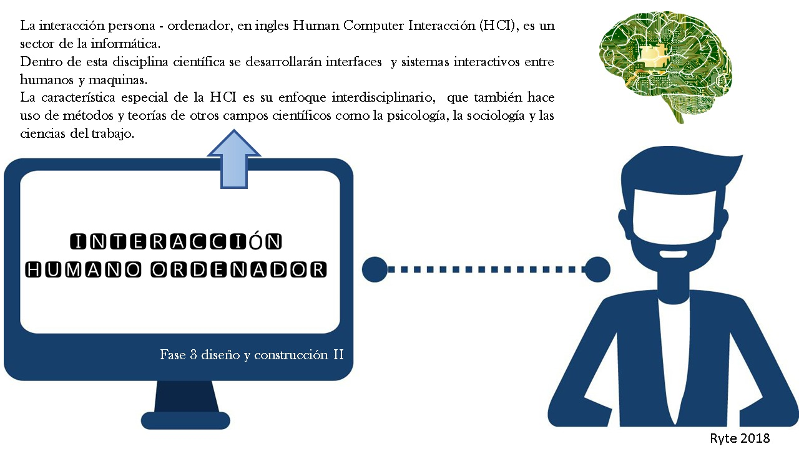
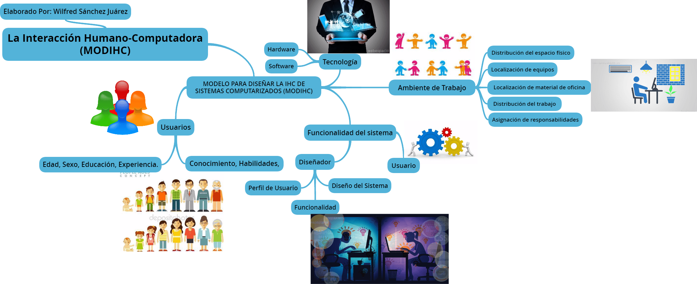

Sintaxis y Selectores CSS, Interacción Humano Ordenador
INICIO
TEMAS
Sintaxis y Selectores CSS
ejemplos
Interacción Humano Ordenador
RECURSOS DIGITALES
RECURSO TEMA 1
RECURSO TEMA 2
APRENDIZAJE
Sintaxis y Selectores CSS
Interacción Humano Ordenador
AUTOR
IMAGENES


MATERIAL DE APOYO